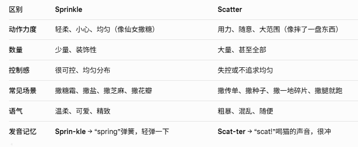

feedback /ˈfiːd.bæk/ n.反馈;回复
It's important to give students regular feedback on their progress定期给学生反馈他们的进步是很重要的。
give you feedback on the test 对你的测验进行反馈
drawback n.缺点，劣势
共 50 个词条 · 1 张附图（含音标截图）
feedback /ˈfiːd.bæk/ n.反馈;回复
It's important to give students regular feedback on their progress定期给学生反馈他们的进步是很重要的。
give you feedback on the test 对你的测验进行反馈
drawback n.缺点，劣势
comparative adj.比较的;相对的，比较而言的 //这个词来自于compare，比较的意思 ,ative结尾是形容词
I believe that a comparative study is required to understand why some companies in the e-learning industry are performing better than others.我认为需要进行一项对比研究来了解为什么一些网络学习行业的公司比其他公司表现好。
comparative linguistics 比较语言学
A comparative study of the educational systems of two countries两国教育制度的比较研究
porcelain /ˈpɔː.səl.ɪn/ n.瓷;瓷器
The delicate（精美的;精密的;易碎的;纤弱的） porcelain teacups added an elegant touch to the table setting精致的瓷茶杯为餐桌摆设增添了优雅的装点。
a porcelain figure 一尊瓷像
porcelain and glass 陶瓷和玻璃
arthritis /ɑːˈθraɪ.tɪs/ n.关节炎
The elderly woman managed her arthritis pain with regular exercise and medication这位老妇人通过定期锻炼和药物治疗来控制关节炎疼痛。
have a touch of arthritis in the wrist（/rɪst/手腕）手腕有轻微关节炎
cascade /kæsˈkeɪd/n.小瀑布;倾泻 v.倾泻;大量落下
The waterfall cascaded gracefully down the rocks, creating a mesmerizing（/ˈmez.mə.raɪ.zɪŋ/吸引人的，迷人的） sight.瀑布从岩石上优雅地倾泻而下，形成了一幅迷人的景象。
a cascade of rainwater 暴雨如注
eclipse /ɪˈklɪps/n.日食，月食;黯然失色
The moon blocked the sun, creating a stunning（/ˈstʌn.ɪŋ/极漂亮的，极迷人的） solar eclipse visible from certain parts of the world.月亮挡住太阳，造成了在世界上某些地方可以看到的令人惊叹的日食。
an eclipse of the sun 日食
an eclipse of the moon 月食
astronomical phenomena（a结尾是复数） such as solstices（/ˈsɒl.stɪs/至，至点，夏／冬至）, equinoxes（/ˈek.wɪ.nɒks/昼夜平分时；春分；秋分） and eclipses天文现象比如冬至(夏至)、春分(秋分)、日食(月食)
shortcoming n.缺点;短处
She was a highly motivated and hard-working team player, but her main shortcoming was that she had a terrible temper when she felt stressed她是一个非常积极和努力的团队成员，但她的主要缺点是当她感到压力时，脾气就会很糟糕。
a result of the shortcomings of both partners双方缺点所带来的后果
defect n.缺点，欠缺 // 注意这个不是检查啊
drawback n.缺点
disadvantage n.缺点;不利
demerit n.缺点
advantage n.优点，优势
merit /ˈmer.ɪt/ n.优点，好处
agency /ˈeɪ.dʒən.si/ n.代理，中介;代理处，经销处
It's easier to hire the services of an agency when you apply fora student visa.申请学生签证时，聘请中介机构进行服务会更加容易。
a local travel agency一家当地旅行社
spasm /ˈspæz.əm/ n.痉挛;抽搐
She experienced a sudden spasm of pain in her back, causing her to wince（/wɪns/（因疼痛而）脸部肌肉抽搐，皱眉蹙额）.她突然感到背部一阵剧痛，使她整个人畏缩起来。
a muscle spasm 肌肉痉挛
send his leg into spasm 使他的腿痉挛
sponsor /ˈspɒn.sər/ n.赞助者;主办者v.赞助;倡议;主办
A new sponsor is leading the team this year and is looking for additional benefactors（/ˈben.ɪ.fæk.tər/捐助人，赞助人）今年有一位新的主办者领导这个团队，并正在寻找更多赞助商。
attract sponsors 吸引赞助者
sponsorship n.赞助;发起
intensive /ɪnˈten.sɪv/adj.加强的;集中的，密集的，深入的
His course was tough (/tʌf/结实的；坚固的；坚强的, 强硬的；严厉的, 困难的；棘手的, （食物）老的，不易切开的，嚼不动的) and intensive and he found it hard to study so much in such a short time.他的课程难度和强度都很大，他发现很难在如此短的时间内学习这么多内容。
an intensive language course 速成语言课程
two weeks of intensive training 两周的强化训练
intense adj.强烈的;紧张的
intensively adv.强烈地;集中地
As a consequence, each vehicle（老师说vehicle不仅仅指车辆，有时候也可以是tool的意思） would be used more intensively, and might need replacing sooner.因此，每一辆汽车将会被更密集地使用，并且可能会需要更早被置换。
instinct /ˈɪn.stɪŋkt/n.本能，直觉;天性
I believe it is a natural human instinct to be curious （/ˈkjʊə.ri.əs/好奇的;好打听的）about the lives and relationships of others.我认为对他人的生活和人际关系感到好奇是人的自然本能。
maternal （/məˈtɜː.nəl/ adj.母亲的;母系的；母性的）instinct 母性本能
instinctive adj.本能的;天生的
parasite /ˈpær.ə.saɪt/ n.寄生虫
Malaria （/məˈleə.ri.ə/疟疾）comes from a parasite that is injected into the bloodstream from the mosquito疟疾来自蚊子将一种寄生虫注射到血液中。
a vast range of parasites 各种各样的寄生虫
parallel （/ˈpær.ə.lel/）adj.平行的
parallax （/ˈpær.ə.læks/）n. （因观察位置改变而引起的）视差（量）
parachute （/ˈpær.ə.ʃuːt/）n.降落伞
这3个para开头的要一起记了
a larval（/ˈlɑː.vəl/ adj. 幼虫的） parasite imported from Singapore一种来自新加坡的寄生虫幼虫
military /ˈmɪl.ɪ.tər.i/ adj.军事的;军队的 n.军队;军人
After multiple promotions and medals he had reached the peak of his military career.在多次获得晋升和勋章之后，他达到了军事生涯的顶峰。
military intelligence 军事情报
military uniform 军服
armament /ˈɑː.mə.mənt/ n.武器，军备
cannon /ˈkæn.ən/ n.加农炮;大炮
weapon n.武器，兵器
fleet /fliːt/ n.舰队
navy n.海军
troop n.军队
In every era, the stadium has acquired （老师说这个获得是抽象的那种获得，一般不指实物）new value and uses: from military fortress （/ˈfɔː.trəs/城堡;堡垒;要塞;设防的地方）to residential village, public space to theatre and most recently a field for experimentation in advanced engineering在每一个时代里，体育场都获得了新的价值和用途:从军事堡垒到住宅村落，从公共空间到演艺剧院，最近还成为先进工程技术的实验场地。
theme /θiːm/ n.主题;题目
This year's theme at the annual conference was the importance of technology in language learning今年年会的主题是科技在语言学习中的重要性。
the theme of the conference会议的主题
scatter /ˈskæt.ər/ v.分散;散开;散播
She scattered the wild flower seeds over the fresh soil.她把野花的种子撒在新鲜的土壤上。
scatter the grass seed over the lawn（/lɔːn/（尤指房屋附近或公园的）草地，草坪） 把草籽撒到草坪上
disperse v.散播;传播

aspect /ˈæs.pekt/ n.方面;朝向;样子，外观
Climate and weather are important aspects of our lives气候和天气是我们生活中的重要方面。
all aspects of city life 城市生活的各个方面
These two unique aspects, one political, the other natural make food production highly vulnerable and different from any other business这两个独特的方面，一是人为的，另一个则是自然的，使粮食生产非常容易受到影响并且与其他行业不同。
optimum /ˈɒp.tɪ.məm/ adj.最佳的;最适宜的
The hot summer weather enables the grapes to reach their optimum ripeness（/ˈraɪp.nəs/ ripen是动词（使）成熟）炎热的夏季天气使葡萄达到最佳成熟度
the optimum use of resources 对资源的充分利用
For instance, crops would be produced all year round, as they would be kept in artificially controlled, optimum growing conditions例如，作物可以全年生产，因为它们处于人工控制的最佳生长环境中。
cave /keɪv/ n.洞穴，山洞;地窖
The explorers cautiously （/ˈkɔː.ʃəs.li/ adj.谨慎地）ventured （/ˈven.tʃər/冒险去（或做）;冒昧地说）into the dark cave, eager to uncover its mysteries（/ˈmɪs.tər.i/神秘的事物，难以理解的事物，谜；悬疑作品;悬疑电影;推理剧）探险者们小心翼翼地冒险进入黑暗洞穴，渴望揭开它的奥秘。
the entrance of the cave 洞口
The caves were first explored in 1887 by a local Māori chief Tane Tinorau, and an English surveyor（/səˈveɪ.ər/（土地）测量员，测绘员，勘测员）, Fred Mace.这些洞穴于1887年由当地毛利人首领Tane Tinorau和英国测量员Fred Mace首次探索。
temple /ˈtem.pəl/ n.庙宇，寺庙;神殿
The ancient temple stood as a testament（/ˈtes.tə.mənt/证明；验证，遗嘱，遗言） to the rich cultural heritage （/ˈher.ɪ.tɪdʒ/ n.遗产;传统）of the region.这座古庙是该地区丰富文化遗产的证明。
go to temple on Saturdays 每周六去寺庙
The complex in which it was built was the size of a city in ancient Egypt and included a temple, courtyards（/ˈkɔːt.jɑːd/庭院，院子）, shrines（/ʃraɪn/圣地;神龛;圣坛;神殿）, and living quarters for the priests（/priːst/神父，牧师，司铎;（基督教以外的）神职人员）它所搭建其中的整个建筑群达到了一座古埃及城市的规模，包括一座寺庙、几处庭院、若干神龛，还有神职人员的生活区域。
intelligence /ɪnˈtel.ɪ.dʒəns/n.智力，才智;情报
He was obviously（/ˈɒb.vi.əs.li/清楚地；明白地；显而易见地） a man of very high intelligence, but he lacked common sense at times他显然是一个非常聪明的人，但他有时会缺乏常识。
a person of high intelligence 一个拥有高智商的人
intelligent adj.聪明的;智能的
Social intelligence is the ability to understand and manage people in a business setting.社交智力是在商业情境下理解他人并与他人打交道的能力。
audition /ɔːˈdɪʃ.ən/ n./v. 试镜，试演，试唱
She prepared rigorously（/ˈrɪɡ.ər.əs.li/严密地，缜密地;严谨地） for the audition, hoping to land the lead role.她为试镜做了严谨的准备，希望能获得主演角色
an audition for a Broadway musical（/ˈmjuː.zɪ.kəl/ n.音乐剧;音乐（影）片，adj. 音乐的；用于音乐的） 一部百老汇音乐剧的试演。
blank /blæŋk/ adj.空白的，空的;茫然的n.空白;空格
The writer stared at the blank page, waiting for inspiration（/ˌɪn.spɪˈreɪ.ʃən/ n.灵感;鼓舞人心的事） before starting to write.作家盯着空白页，等待灵感，然后开始写作。
a blank sheet of paper 一张空白的纸
My mind just goes blank when l read anything about chemicals（/ˈkem.ɪ.kəl/化学品；化学制品，化学的；化学制品的）当我读到任何关于化学的内容时，我的大脑就会一片空白。
rival /ˈraɪ.vəl/ n.对手;竞争者v与.相匹敌，比得上
He was nervous about the boxing match, as this time he would be up against his biggest rival in the field.他对这场拳击比赛很紧张，因为这次他将在拳击场上面对他最大的竞争对手。
our biggest economic rivals 我们最大的经济竞争对手
Municipal /mjuːˈnɪs.ɪ.pəl/ adj.市政的;市的
The municipal office for registering for your tax returns is located in the city's central financial building市政税务申报大厅位于该市的中央金融大厦。
municipal councils 市政委员会
municipal workers 市政工作者
constitute /ˈkɒn.stɪ.tʃuːt/ v.组成，构成;建立
The universities constitute a reservoir（/ˈrez.ə.vwɑːr/水库;蓄水池，储备;储藏;宝库） of extensive knowledge of research for the country.大学是一个国家广泛研究知识的地方。
constitute less than 7 percent of its total population构成总人口的不到7%
make up 组成，构成
constitution /ˌkɒn.stɪˈtʃuː.ʃən/ n.宪法;组成
border /ˈbɔː.dər/ n.边境，国界
The border between the two countries is heavily guarded两国间的边境戒备森严。
a border dispute（/dɪˈspjuːt/ /ˈdɪs.pjuːt/（尤指劳资双方或相邻两国之间的）争执，争端，纠纷） 边界争端
status /ˈsteɪ.təs/ n.地位;状态;情形
People should not see money as the sole criterion（/kraɪˈtɪə.ri.ən/（作出评判、决定或处理的）标准，准则复数是：criteria /kraɪˈtɪə.ri.ə/） of social status人们不应该把金钱作为社会地位的唯一衡量标准。
low status jobs 地位低下的工作
have a high social status 拥有高社会地位
But despite an implicit recognition（/ˌrek.əɡˈnɪʃ.ən/承认;认可;接受，赏识，赞赏;表彰） that the spread /spred/，扩散，蔓延）of good reproductions（复制品） can be culturally valuable, museums continue to promote the special status of original work.但是，尽管人们含蓄地承认优秀复制品的传播或许在文化层面有价值，但博物馆依然继续宣传原作品的特殊地位。
flee v.逃离，逃避，逃跑
The frightened（/ˈfraɪ.tənd/害怕的，受惊的） animals fled from the approaching forest fire.受到惊吓的动物逃离了正在逼近的森林大火。
a camp for refugees（/ˌref.juˈdʒiː/难民;避难者;逃亡者） fleeing from the war收留战争难民的难民营
consecutive /kənˈsek.jə.tɪv/ adj.连贯的，连续不断的
This is the fifth consecutive weekend that I have spent at the gym.这已经是我在健身房连续度过的第五个周末了。
eight consecutive days 连续八天
conscious /ˈkɒn.ʃəs/ adj.意识到的;神志清醒的;刻意的
As he woke up gradually on the train, he became conscious that people were looking at him.随着他在火车上逐渐醒来，他意识到人们都在看着他。
very conscious of the problems involved 意识到了所涉及的问题
unconscious adj.无意识的
subconscious n.潜意识;下意识 adj.潜意识的;下意识的
consciousness n.意识;观念
mature /məˈtʃʊər/ adj. 成熟的; 到期的
He has a mature attitude to work and is always making efforts to diplomatically（/ˌdɪp.ləˈmæt.ɪ.kəl.i/委婉地，外交上，形容词是diplomatic。//中国那个外交部就不能叫diplomatically） resolve any disputes amongst the team members.他有成熟的工作态度，总是努力通过委婉的方式解决团队成员间的争论。
a mature and sensible （/ˈsen.sə.bəl/理智的;明智的）attitude 成熟而理智的态度
immature /ˌɪm.əˈtʃʊər/ adj.不成熟的
maturity /məˈtʃʊə.rə.ti/ n.成熟;完备
intervene /ˌɪn.təˈviːn/ v.干涉，干预
When their argument started to get aggressive（/əˈɡres.ɪv/ adj.侵略性的;有进取心的，好斗的;富于攻击性的;挑衅的）, I felt I had to intervene to calm things down.当他们的争论开始变得激烈时，我认为自己需要介入来平息争论。
intervene in the dispute 介入纠纷
intervention n.干涉;干预
military intervention 军事干预
elaborate adj. /iˈlæb.ər.ət/ 精心制作的详尽的 v. /iˈlæb.ə.reɪt/详细阐述
The designs covering the temple roof were elaborate and intricate（/ˈɪn.trɪ.kət/错综复杂的；复杂精细的；难理解的；难解决的）.寺庙屋顶的设计是精致而复杂的。
an elaborate computer system 精密的计算机系统
elaborate on a statement 详述观点，这里就是做动词
elaborately adv.精巧地
an elaborately decorated（/ˈdek.ə.reɪt/装饰，装点，打扮） room 一间精心装饰的房间
amateur 英/ˈæm.ə.tər/ 美/ˈæm.ə.tʃɚ/ n.业余爱好者 adj.业余的，这个单词2个读音，以前读的是英式的
He was only an amateur but he displayed promise（（成功的）迹象，征兆；（有）出息，（有）前途）; his teachers were sure he'd end up being a real pro.他只是个业余爱好者，但表现得很有发展前景，他的老师确信他最终会成为一个真正的专业人员。
open to both amateurs and professionals对业余选手和职业选手都开放
professional adj.职业的;专业的
column /ˈkɒl.əm/ n.圆柱;专栏;列队
The romans were famous for building temples with different styles of columns罗马人以建造拥有不同风格柱子的庙宇而闻名。
the financial column 财经专栏
biweekly n.双周刊 adj.两周一次的
bimonthly n.双月刊 adj.两个月一次的
columnist n.专栏作家
editor n.编辑
encyclopedia /ɪnˌsaɪ.kləˈpiː.di.ə/ n.百科全书
headline n.标题
journal n.期刊
degenerate /dɪˈdʒen.ə.reɪt/ v.退化;恶化;堕落
The debate began reasonably and calmly but quickly degenerated into chaos（/ˈkeɪ.ɒs/混乱;无秩序状态） after everyone started to passionately（/ˈpæʃ.ən.ət.li/热诚地|热情地） argue.辩论开始时有条理而冷静，但在大家开始激烈争论后，很快陷入了混乱。
degenerate quickly 迅速恶化
deteriorate v.恶化，变坏 这个词会写，但是老是记不住啥意思
generate v.产生;形成
generation n.代;一代人;产生
generator n.发电机
instalment /ɪnˈstɔːl.mənt/ n.分期付款;一节，一集//写成installment也可以
She decided to pay back the loan in small instalments each month.她决定以每月进行小额分期的方式偿还贷款。
the final instalment on the loan 贷款的最后一期付款
vent /vent/ n.通风口，排气口v表达，发泄;排烟
The decorator opened the window to vent out the strong smell of gloss （/ɡlɒs/高光漆，亮光漆，光亮，光泽，给…加注释（或注解））paint.装修工打开窗户，以排出亮面漆的强烈气味。
vent her frustration（/frʌsˈtreɪ.ʃən/（因不能满足需求而）沮丧；令人沮丧的事物，动词是frustrate） 发泄她的沮丧
overwhelm /ˌəʊ.vəˈwelm/ v. 淹没; 压倒，（用武力）制服，击败，征服
He was overwhelmed with the amount of work he was given——the only thing he could do was try to organize his time as best as he could.他被分配给他的工作量压得喘不过气来，他唯一能做的就是尽自己所能安排好时间。
overwhelm the weakened enemy击溃脆弱的敌军
overwhelming adj.压倒性的，不可阻挡的
cluster n.群;簇;丛;串
There was a small cluster of people standing in the hallway（/ˈhɔːl.weɪ/门厅;走廊（同 hall）） outside the exhibition room有一小群人站在展览室外的走廊上。
a cluster of stars 星团
a cluster of spectators（/spekˈteɪ.tər/（尤指体育赛事的）观众） 一群旁观者
this cluster of cells 这些细胞
newsletter n.时事通讯;内部通讯，简讯
A weekly newsletter is sent by email to all subscribers outlining the events, plans and activities of the school每周时事通讯会通过电子邮件发送给所有订阅者，概述学校的事件、计划和活动，
receive a quarterly newsletter 收到内部通讯季刊
carve /kɑːv/ v.雕刻;切，割
The sculptor （/ˈskʌlp.tər/）carved intricate designs into the woodwork of the temple eaves（/ivz/屋檐）.这位雕刻家在神庙屋檐的木制品上雕刻了复杂的图案。
be carved into the shape of a flower 雕成花朵状
groove /ɡruːv/ n.凹槽;音乐节奏
The carpenter （/ˈkɑː.pɪn.tər/木匠;木工）carefully fitted the well-crafted table leg into the groove in the table top木匠小心地把精心制作的桌腿装进桌面的凹槽里。
a jazz groove 爵士乐节奏
conjunction /kənˈdʒʌŋk.ʃən/ n.结合;连接;同时发生
The conjunction of heavy winds and rains caused the delays in shipping.暴雨和大风同时出现，造成了航运的延误。
the conjunction of low inflation and low unemployment低通货膨胀与低失业率同时出现
illustrate /ˈɪl.ə.streɪt/ v. 阐明，解释; 例证 给（书籍、杂志等）画插图
He used amusing（/əˈmjuː.zɪŋ/好笑的，有趣的;引人发笑的） storytelling methods of illustrating his point during the presentation.他在演讲中使用了有趣的讲故事的方法来阐述他的观点。
an illustrated textbook一本有插图的课本
illustration n.说明;例证;图解
abolish /əˈbɒl.ɪʃ/v.废除，废止;取消
They officially abolished slavery in the late 1800s, but some countries continued the practice for many years afterwards.他们在19世纪末正式废除了奴隶制，但一些国家在之后的许多年里继续实行这一制度。
abolish racially （/ˈreɪ.ʃəl.i/以种族歧视（仇恨）的方式，与人种（或种族）有关联地）discriminatory（/dɪˈskrɪm.ɪ.nə.tər.i/歧视的，区别对待的） laws废除带有种族歧视的法律
radical /ˈræd.ɪ.kəl/ adj.激进的;根本的，彻底的
The new CEO is proposing （/prəˈpəʊz/ v.建议;提出;计划;求婚）radical changes to the way the company is structured.新任CEO提出对公司的组织结构进行彻底改革。
the need for radical changes in education对教育进行彻底变革的需要
proceed /prəˈsiːd/ v.继续进行，接着做;行进，前往
After successfully passing the first-stage interview, the company decided to proceed with the candidate's application.在成功通过第一阶段面试后，公司决定继续候选人的申请。
proceed slowly along the street沿着街道缓缓行进
benchmark /ˈbentʃ.mɑːk/ n.基准;标准
The boss established some reasonable benchmarks to measure employee performance for the coming quarter.老板制定了一些合理的标准，用来在下季度衡量员工的表现。
a benchmark for the economy 衡量经济发展的基准
bench n.工作台;长凳